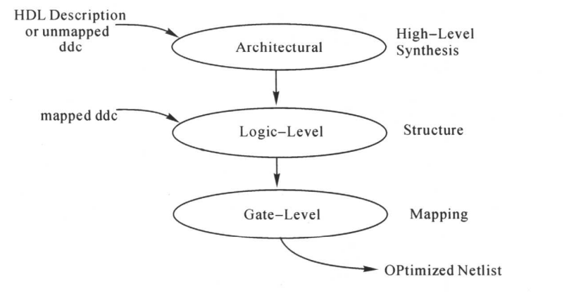
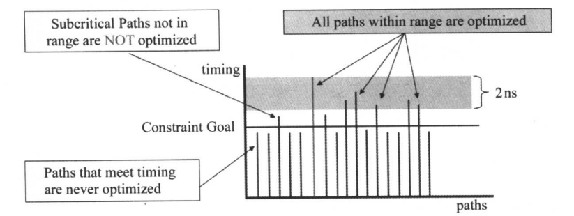
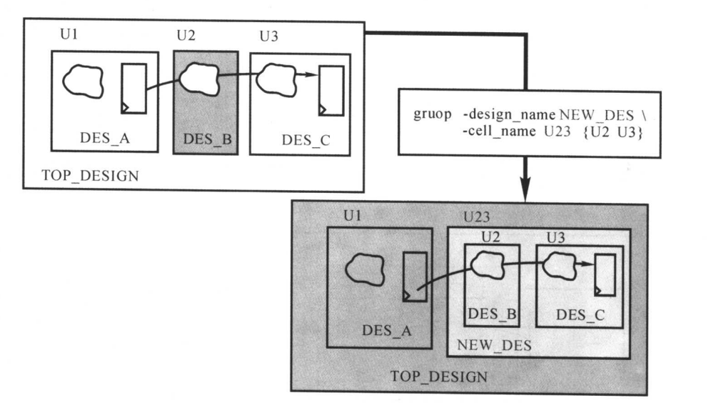
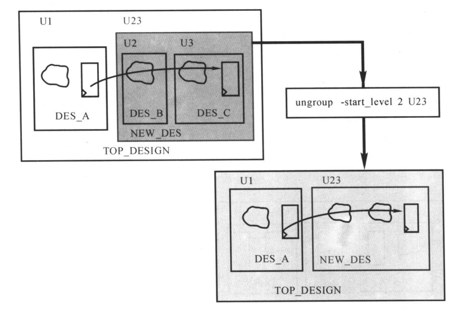

DC相关理解（三）
本文最后更新于：2023年11月3日 晚上
- 参考
- http://www.cnblogs.com/IClearner
- 《专用集成电路设计实用教程》
- 博客中很多内容都来自《专用集成电路设计实用教程》，有空可以细读一下，加上实践。
1. DC 编译策略及工具版本
- 编译策略
- 两种：top-down，bottom-up；
- top-down
- 顶层设计和子设计在一起编译;所有的环境和约束设置针对顶层设计;此种策略自动考虑到相关的内部设计。
- 但是此种策略不适合大型设计;因为设计必须同时驻内存;硬件资源耗费大。
- bottom-up
- 子设计单独约束;当子设计成功编译后;被设置为 dont_touch 属性;防止在之后的编译过程中被修改;
- 所有同层子设计编译完成后；再编译之上的父设计;直至顶层设计编译完成。
- Bottom-up 策略允许大规模设计;因为该策略不需要所有设计同时驻入内存。
- DC工具版本
- 根据支持的功能特性的多少，有如下排序：DC NXT > DC Graphical > DC Ultra > DC Expert。
2. DC 中的优化
- 设计中常常会出现多次例化的情况，我们可以使用指令uniquify为设计中每一个复制的模块产生一个唯一名字的拷贝，这样DC就可以根据每个模块本身特有的环境做优化和映射。
- 电路的综合优化主要包括三个阶段，如下图所示。
结构级优化
逻辑级优化
门级优化

2.1 结构级优化
设计结构选择
- 在DesignWare中选择最合适的结构或算法实现电路的功能。
数据通路的优化
- 选择CSA等算法优化数据通路的设计。
共享共同子表达式
- 提取可以共同使用的子表达式，减小资源消耗。
1
2
3
4
5
6
7// 优化前
f0 = a + b + c
f1 = a + b + d
// 优化后
tmp = a + b
f0 = tmp + c
f1 = tmp + d
- 提取可以共同使用的子表达式，减小资源消耗。
重新排序运算符号
- 以获得更少的资源和更小的延迟。
- 由于编译器解析表达式存在一定优先级，如果重排序加括号确定优先级，就可以实现一定的并行度，减小延时。
资源共享：
- 对于算数运算的资源共享，默认策略是约束驱动的。
- 示例如下图所示：DC会将(a)中的电路转化为(b)中的电路。
- 我们可以使用指令让DC使用面积优化策略，共享资源。如下面指令修改变量：
1
set hlo_resource_allocation area - 如果不希望DC综合时进行资源共享优化，可以将上面的变量设置为none，但是如果想要类似优化，只能在RTL编码时处理了。
2.2 逻辑级优化
做完2.1的结构级优化后，电路的功能以GTECH的器件表示。
结构优化
- 共用子表达式减少逻辑，是DC默认的逻辑级优化策略。
- 结构优化过程中，可能会在电路中加入中间变量和逻辑结构。
1
2
3
4
5
6
7
8
9// 优化前
f0 = ab + ac
f1 = b + c + d
f2 = b'c'e
// 优化后
f0 = at0
f1 = t0 + d
f2 = t0'e
t0 = b + c - 注意：在2.1节也介绍了共用子表达式的设计，但是两者不同。2.1节是算数电路级的子表达式；而2.2节是门级电路的共用子表达式。
- 使用下面指令设置结构优化
1
set_structure true
展平优化
- 将多级的组合逻辑电路减少为两级，都变为先与后或的电路。如下图所示。
- 主要用作速度的优化，电路面积可能会增大。
- 与约束无关，可以使用下面指令设置展平优化。
1
set_flatten true -effort low | medium | high
2.3 门级优化
门级优化时，DC开始映射，实现门级电路。映射过程中的优化主要包括4个阶段：
- 延迟优化
- 设计规则修整
- 以时序为代价的设计规则修整
- 面积优化
映射考虑组合逻辑和时序逻辑
- 对于组合逻辑的映射，主要选择能够满足时间和面积的要求。
- DC会对每个逻辑表达式进行多个变形，选择一个能够达到要求的逻辑表达式。
- 对于时序逻辑的映射，选择的时序单元要求能够满足时间和面积的要求。
- 有时，为例提高速度和面积，DC可能会选择比较复杂的时序单元。
- 对于组合逻辑的映射，主要选择能够满足时间和面积的要求。
映射过程中，DC会检查电路是否满足DRC，如果有违例，DC会插入缓冲器以及修改单元的驱动能力。
- DC会首先在不影响面积和速度的情况下，尝试修复所有的DRC违例；如果没有其它方法，那么DC会牺牲时间和面积为代价进行修复。
- 在检查DRC时，可能出现一个寄存器驱动多个寄存器，导致扇出过大不满足DRC规则，DC会将作为驱动的寄存器复制多个，并将扇出进行分割。
- 在 dc_shell -topo 模式下中可以使用下面指令，自动进行扇出分割的优化。
1
compile_ultra -timing_high_effort_script
- 在 dc_shell -topo 模式下中可以使用下面指令，自动进行扇出分割的优化。
3. 优化策略
3.1 增量编辑
- 使用增量编辑时，设计不会回到GTECH，不会进行结构级优化和逻辑级优化，但是DesignWare的实现可能会发生变化。
3.2 自定义路径组和关键范围
- 这篇博客中有介绍修复setup违例，其中一种方法就是group_path。需要额外指定group_path是由DC优化策略所决定的。
- DC默认的行为就是对关键路径进行优化，关键路径出现违例，而且没办法为关键路径找到一个更好的优化解决方案时，综合过程就停止。次关键路径也不会被优化，只是简单的完成映射而已。
- 除了group_path外，还可以指定关键范围，举例如下，DC会对在相较于关键路径差2ns的范围内的所有路径作优化。
1
set_critical_range 2 [current_design]- 解决次关键路径的时序问题可能也可以帮助关键路径的优化。
- 但是如果由于对次关键路径的优化导致关键路径的时序变差，那么DC将不对次关键路径进行优化。
- 建议关键范围的值不要超过关键路径延时总值的10%。
- group_path + 关键范围
- 使DC对更多的路径做优化。
1
group_path - name CLK1 -critical_range 0.3
- 使DC对更多的路径做优化。
- group_path & 关键范围
- group_path：DC可能会牺牲一个路径组的时序，而让另一个路径组的路径时序有改善。所以可能加入一个路径组，导致时序最差的路径时序变得更差。
- 关键范围：不允许因为改善次关键路径而导致关键路径时序变差。
3.3 模块划分
由于DC在对整个电路做综合时，必须保留每个模块的端口，因此逻辑综合不能够跨越模块边界，相邻模块的组合逻辑也不能合并。可以使用group和ungroup命令重新进行模块划分。
举例如下，A到C之间的组合逻辑有些长，第一张图由于划分为三个模块，而DC工具没办法去跨模块进行优化。
- 如果A、B、C之间没有层次的分隔，那么综合工具对组合逻辑的优化技术可以充分的使用。如第二张图所示。
- 对于寄存器和组合逻辑顺序的划分可以选择 组合逻辑在寄存器前 或相反。
- 但若将组合逻辑放在寄存器前，可以对时序电路有更好的优化效果。
- 因为，工具在对时序电路进行优化时，可以选择一个更为复杂的触发器（JK\T\Muxed\Clock-enabled等），将一部分的组合逻辑电路吸收到触发器中，从而使电路的面积更小。
- 如果A、B、C之间没有层次的分隔，那么综合工具对组合逻辑的优化技术可以充分的使用。如第二张图所示。
模块划分时，尽量不要使用胶合逻辑，可以如下图所示。
- 胶合逻辑是模块到模块之间的组合逻辑，由于其不能被其他模块吸收，优化受到了限制。我们可以将胶合逻辑加到某一个模块的组合逻辑中，解决这个问题。
对于模块的划分，我们可以在RTL级进行修改，也可以在DC层进行修改。
DC修改方式
- 自动修改划分
1
2
3
4# 选择优化延时/面积，更详细的可以参考《DC Synthesis Variables and Attributes Version》
compile -auto_ungroup area|delay
# 也可以直接使用指令，该指令在综合时自动取消所有模块分区和层次结构。
compile -ungroup_all- 手动修改划分
使用group可以产生新的层次模块。
1
group -design_name NEW_DES -cell_name U23 {U2 U3}使用ungroup取消一个或所有模块分区。
1
ungroup -start_level 2 U23
如果所有结构完全展开，那么会导致形式验证、ECO、后仿调试，会大大加大难度。所以，一般建议只flatten跨模块的大组合逻辑。
DC相关理解（三）
http://binbinqian.cn/2023/11/02/DC相关理解（三）/